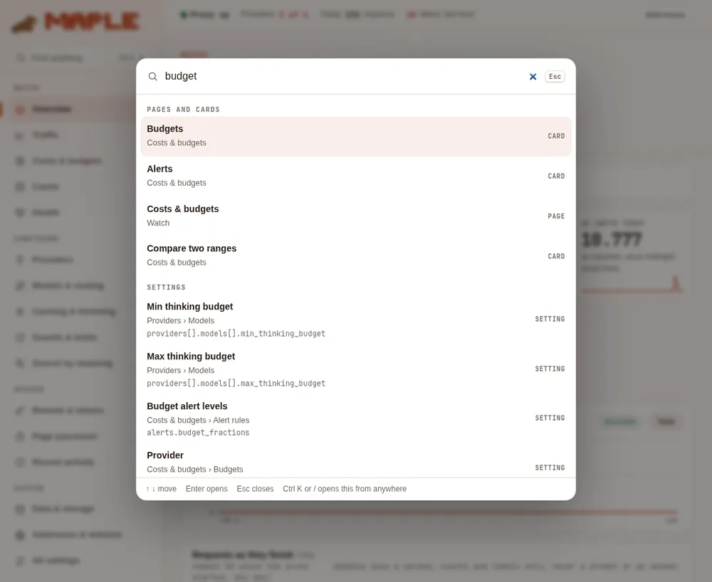
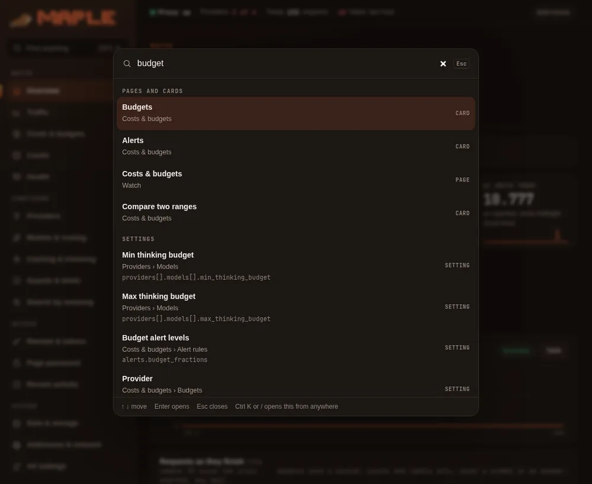

Get startedUpgrading8 min read
Upgrading to 2.0 #
On this page
If you use Maple Harness on your own machine, upgrading to 2.0 asks nothing of you: update, restart the proxy, and carry on. The team, hub and container features are new, but they stay out of the way until you set them up.
This page says what keeps working, what is new and on, what is new and off, what changed, that going back to 1.x is no longer possible, and what 2.0 does not do yet.
In plain words #
- On one computer, nothing to do. Update, restart the proxy, carry on. Your settings, sign-ins, tokens, sessions and usage history keep working.
- New things stay out of the way. Teams, hubs and containers only appear once you set them up.
- The setup page looks different. Its tabs now sit in two groups, Watch and Configure (from 2.2), and a Find a setting box finds any setting by a word. Old links and bookmarks keep going to the right place. (The current page has a sidebar of pages and Find anything instead: see The setup page.)
- Going back to 1.x is no longer possible: releases before 2.0.0 are no longer published.


Nothing to do #
Everything a 1.x release left on your disk keeps working on 2.0:
- your
config.yamland settings, sign-ins and provider keys; - access tokens, and the phones and computers you paired;
- saved sessions, which resume where you left them;
- the usage log, the events log, your exports, and the DuckDB queries you already wrote.
We tested this by starting 2.0 on the files that each release from 1.0 to 1.18 left behind, and asking it the same questions that release had answered. The install, the first run and the setup page's first steps (sign in, and Auto mode) are the same as before.
New, and on by default #
These need no setup and change nothing about how your requests are routed.
- The setup page in tabs. Overview, Usage, Costs & alerts, Cache, Health, Auto, Data and Settings in 2.0 (2.2 groups them into Watch and Configure, and Settings is split up: see The setup page), with charts of your usage and a live view of requests as they finish. Every card you had is still there, in a tab, and an old link to a card opens its tab. See The setup page.
- A filter bar above the data tabs: a time range and More filters (provider, model, token and more). With no filter, every card shows what it showed before. See Filter the charts and cards.
- Provider health. The proxy watches how each provider and model answers on your own traffic and shows it as healthy, degraded or demoted. It sends no requests of its own and does not change routing. See Provider health.
- Budget alerts at 80% and 100%, only for budgets you set. If you have no budget, nothing fires and nothing changes. See Alerts and forecasts.
- New columns in the usage log (schema version 5): which proxy wrote a line, ids for the line and the request, and, for teams and hubs, where a request came from. Lines written before 2.0 keep their values and show the new columns empty. See Your usage data.
- More in the events log. It already recorded settings changes; it now also records provider health changes, spend alerts and model switches. See The events log.
New, and off until you turn it on #
None of these appear in your setup, ask you anything, or show up on the setup page until you configure them.
- People and teams on one proxy, each with their own budgets, models and accounts. See Teams.
- The self view, where a person's token can read their own budget and spend (
people_self_view). See The self view. - Health failover (
health_failover: on): a demoted model is tried after your other fallbacks. See Health failover. - Chaining proxies into hubs, with the new
mapleprovider type. See Chain proxies into hubs. - The MCP hub (experimental): your MCP servers run once and are offered at one address. See MCP hub.
- Several replicas sharing PostgreSQL and Redis (
storage.mode: central). See Run the proxy on Kubernetes and Run the proxy in Docker. - Analytics files: monthly Parquet files, a DuckDB file, or a DuckLake, for long history
(
server.usage_analytics, and themaple-proxy usage compact,usage duckdbandusage lakecommands). See Your data and The Maple data lake.
What changed #
- The setup page's sections moved into tabs. Nothing was removed. They have since moved into a sidebar of pages; What moved from 2.x says where each card is now.
maple-proxy usage statusexplains how long the usage log is kept. It used to say "everything (usage_retention_days: 0)" when the setting was not set. It now shows the retention the daily cleanup really applies (90 days in the folder the proxy made) and, when cleanup is off, why. The proxy's start log no longer says "0 days kept".- Stopping the proxy no longer leaves a temporary file in your configuration folder. The proxy now waits for its last save to finish before it exits.
GET /api/providers/healthsays more. Each provider also has its health state and the models seen; the fields it always had are unchanged.- Maple Harness tells the proxy when you switch model (the
X-Maple-Model-Switchrequest header, with no model name), somaple-proxy usage auto-reportcan count what followed a choice of auto. - An answer from the response cache no longer counts as an attempt in
usage queryand the DuckDB view, so they agree with the exports.
Two things worth knowing about the new features:
- Alerts in the
X-Maple-Alertheader go only to the caller they concern. A tool on the proxy's own machine without a token gets every alert, as you would expect. A caller using an access token, on this machine or another, gets only the alerts about their own budget (with people set up), and otherwise none. If you are the only one using your proxy and your tools use a token, setalerts.header: allto get every alert there too. The setup page andmaple-proxy usage alertsalways show every alert. See Who gets which alert. - Forecasts use the average of the last seven complete days, so a change in your spending shows up only after a few days. See Forecasts.
Upgrade #
On your own machine:
maple-harness update
maple-proxy updateOr run the installer one-liner again. Then restart the proxy so the new version runs (/proxy restart in the harness does it); if it
runs as a background service, see Update. Check the versions:
maple-harness version
maple-proxy versionIn a container: no image is published, so build a new one from the 2.0 release with the sample Dockerfile
(--build-arg MAPLE_VERSION=v2.0.0) and start it on the same volume. See
Upgrading and backups, and Upgrades for several
replicas.
A chain of proxies: upgrade the top hub first, then the proxies below it, one level at a time. A proxy below
relies on what its hub offers (the hub endpoints and the details a hub reads about who asked), so the hub needs to
have them first. A proxy on 2.0 cannot chain to a hub that is still on 1.x at all: 1.x has none of the hub
endpoints, and maple-proxy chain status says the hub does not serve chained proxies.
Going back to 1.x #
Releases before 2.0.0 are no longer published, so the installers cannot install 1.18, 1.17 or any other 1.x
release. To go back to an earlier version, install an earlier 2.x release, for example
MAPLEHARNESS_VERSION=v2.6.2 (the install page shows how).
Known limitations in 2.0 #
- The setup page's live view is limited to eight open views per proxy; past that, a tab refreshes every few seconds instead. With several replicas, "in flight" counts the replica serving the page, and the others' requests reach the live view within about ten seconds.
- The setup page's charts read the usage log through the proxy, not the lake or other copies; for those, use the DuckDB queries on the Data & storage page. The hour-by-day chart covers the last 28 days at most.
- A budget can be exceeded by the requests already running when it runs out, which are allowed to finish.
- On a proxy that listens only on this machine, a caller can leave the token out and is counted as
local. Listen off this machine to require a token for every request. - Forecasts assume the next days look like the last seven, so a rise in spend shows late (optimistic) for a few days. A quota forecast assumes the quota is used at the rate of the AI units the provider reported.
- The DuckLake only ever adds, so rows the usage log's cleanup removes stay in the lake until you delete it. The DuckDB file and the monthly files follow the retention.
- The views over the monthly files list the files there were when they were printed: print them again after the next compaction.
- With several replicas:
- a browser sign-in (GitHub Copilot) is kept by the replica it was made on: use providers with keys in the Secret, or sign in on each replica;
- provider budgets (
budgets:) are counted by each replica from the others' requests within seconds, so a burst can pass a provider budget by a little more than with one proxy (person and team budgets are shared exactly); - usage waiting for PostgreSQL is kept in the replica's memory and is lost if that replica stops before PostgreSQL is back (the log says how many lines);
- a single Redis (or one with a standby) only: Redis Cluster is not supported.
Related #
- Upgrading to 3.0 What keeps working, what behaves differently, and how to go back.
- Install One line on macOS, Linux or Windows, and how to update.
- Keep it running in the background The proxy and the gateway as services that start with your computer.
- Share Maple with a team Hubs, people and fallbacks, from one shared proxy to a hub of hubs.
- Release notes Every change in each release.